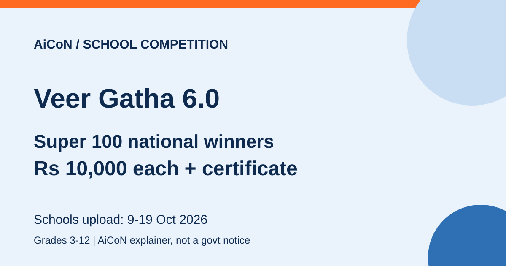

Veer Gatha 6.0: school project with a ₹10,000 national prize, entries 9 to 19 October
Project Veer Gatha 6.0 is a school project by the Ministry of Defence with the Ministry of Education. Students write or create something about gallantry award winners and Indian warriors. The Ministry of Defence gives each of the 100 national winners (the "Super 100") a cash prize of ₹10,000. Entries are uploaded by the school on MyGov between 9 and 19 October 2026.

Who can take part?
Students of schools in India from Grade 3 to Grade 12, in three categories. CBSE schools abroad can also upload online.
What can you make?
- Grade 3 to 5: a poem, a paragraph (150 words), a painting or a drawing
- Grade 6 to 8: a poem, a paragraph (300 words), a painting, a drawing, a multimedia presentation or a short video
- Grade 9 to 12: a poem, an essay (750 words), a painting, a drawing, a multimedia presentation or a short video
Topics are about a gallantry award winner or a warrior of India, such as Prithviraj Chauhan, King Kharavela of Kalinga or Shivaji. The official page lists suggestive topics for each category.
Dates on the official page
- 12 September to 4 October 2026: school-level activities
- 9 to 19 October 2026: schools upload entries on MyGov
- 21 October to 14 November: district evaluation
- 16 November to 4 December: state or UT evaluation
- 8 to 28 December: national evaluation
How many entries per school?
For a school covering Grades 3-12, the four entries are: one for Grades 3-5, one for Grades 6-8, one for Grades 9-10 and one for Grades 11-12. There are three broad categories, but the Secondary category has two entry groups.
- Schools up to Grade 10: one in each broad category and one extra in any category.
- Schools up to Grade 8: one in each of the first two categories and two extra across those categories.
- Schools up to Grade 5: four entries in the first category.
Schools select and upload these entries after their own evaluation. Ask your school about its selection and internal deadline; do not assume it can accept a new project after school-level activities have ended.
Winners and prizes
- National: 100 winners (Super 100), each with a ₹10,000 cash prize from the Ministry of Defence and a certificate from both ministries
- State or UT: 8 winners
- District: 4 winners
State, UT and district prizes are decided by the respective authorities, so the page does not give a fixed amount for them.
Frequently asked questions
Can I enter directly?
The official page says schools upload the entries on MyGov. Speak to your teacher or principal.
Is there a word limit?
Yes. The rubric deducts 2 marks if an essay or paragraph goes 50 or more words over the limit.
What changed since this post?
Official page checked 12 October 2026 and still live. Clarified the four-entry split within three broad categories and the 50-or-more-word penalty. The official page has inconsistent category wording in its winner breakdown and an older-version reference, so confirm any prior-winner eligibility question with the school or the official project team. Dates and prizes here follow the current Veer Gatha 6.0 page; this is not a promise of selection or payment.
Source: Veer Gatha 6, Innovate India (MyGov). Checked 12 October 2026. This is an AiCoN explainer, not a government publication.